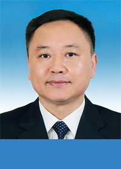

Minister

Li Guoying
Li Guoying
Li Guoying, male, Han ethnicity, was born in Yuzhou, Henan Province, in December 1963. He began his career in July 1984 and joined the Communist Party of China (CPC) in August 1988. Li completed an in-service graduate program and was awarded a Doctor of Science degree. He is also a professor level senior engineer. Currently, he is a member of the 20th CPC Central Committee, Secretary of the CPC Committee of Ministry of Water Resources and Minister of Water Resources.
| Aug.1980-Jul.1984 | Completed an undergraduate study in North China University of Water Resources and Electric Power, majoring in Water Conservancy and Hydropower Engineering Construction, and after graduation worked as an engineer in Planning Section I of Planning Division of Yellow River Engineering Consulting Co., Ltd., Yellow River Conservancy Commission, Ministry of Water Resources |
| Mar.1987-May 1991 | Deputy Chief of Planning Section I, and Chief of Comprehensive planning Section of Planning Division of Yellow River Engineering Consulting Co., Ltd., Yellow River Conservancy Commission, Ministry of Water Resources |
| May 1991-Aug.1992 | Deputy Director of Planning Division I of Yellow River Engineering Consulting Co., Ltd., Yellow River Conservancy Commission, Ministry of Water Resources |
| Aug.1992-May 1994 | Director of Planning Division I of Yellow River Engineering Consulting Co., Ltd., Yellow River Conservancy Commission, Ministry of Water Resources |
| May 1994-May 1995 | Assistant to Chief Engineer, Ministry of Water Resources |
| May 1995-Oct.1995 | Deputy Chief Engineer, Ministry of Water Resources |
| Oct.1995-May 1997 | Deputy Chief Engineer, Ministry of Water Resources Deputy Director-General and a member of the CPC Committee of Xiaolangdi Project Construction and Management Bureau, Ministry of Water Resources |
| May 1997-Sep.1998 | Vice Commissioner and a member of the CPC Committee of Yellow River Conservancy Commission, Ministry of Water Resources Deputy Director-General (concurrently) and a member of the CPC Committee of Xiaolangdi Project Construction and Management Bureau, Ministry of Water Resource |
| Sep.1998-May 1999 | Chief Engineer, Ministry of Water Resources |
| May 1999-Aug.1999 | Secretary of the CPC Committee of Department of Water Resources, Heilongjiang Province (Sep.1996-Jul.1999 participated in the one-year training program for young and middle-aged cadres in Party School of the Central Committee of CPC, and continued to study philosophy in Graduate Department of Party school of the Central Committee of CPC ) |
| Aug.1999-May 2001 | Director-General and Secretary of the CPC Committee of Department of Water Resources, Heilongjiang Province |
| May 2001-Mar.2011 | Commissioner (Vice Minister Level) and Secretary of the CPC Committee of Yellow River Conservancy Commission, Ministry of Water Resources (Sep.2007-Jan.2011 participated in an in-service graduate program in Environmental Science in School of Urban and Environmental Sciences of Northeast Normal University, and was awarded a Doctor of Science degree) |
| Mar. 2011-Jul. 2015 | Vice Minister of Water Resources A member of the CPC Committee of Ministry of Water Resources |
| Jul.2015-Aug.2015 | Deputy Secretary of the CPC Anhui Provincial Committee |
| Aug.2015-Aug.2016 | Deputy Secretary of the CPC Anhui Provincial Committee President of Party School of the CPC Anhui Provincial Committee (concurrently) |
| Aug.2016-Sep.2016 | Deputy Secretary of the CPC Anhui Provincial Committee Secretary of the CPC Committee of Anhui Provincial Government President of Party School of the CPC Anhui Provincial Committee (concurrently) |
| Sep.2016-Nov.2016 | Deputy Secretary of the CPC Anhui Provincial Committee Vice Governor and Acting Governor of Anhui Province Secretary of the CPC Committee of Anhui Provincial Government President of Party School of the CPC Anhui Provincial Committee (concurrently) |
| Nov.2016-Jan.2017 | Deputy Secretary of the CPC Anhui Provincial Committee Vice Governor and Acting Governor of Anhui Province Secretary of the CPC Committee of Anhui Provincial Government |
| Jan.2017-Jan.2021 | Deputy Secretary of the CPC Anhui Provincial Committee Governor of Anhui Province Secretary of the CPC Committee of Anhui Provincial Government |
| Jan.2021-Feb.2021 | Secretary of the CPC Committee of Ministry of Water Resources |
| Feb.2021 | Secretary of the CPC Committee of Ministry of Water Resources Minister of Water Resources |
Li is a representative of the 16th, 17th, 18th, 19th and 20th CPC National Congress, an alternate member of the 18th CPC Central Committee and a member of the 19th and 20th CPC Central Committee, and he is also a deputy to the 10th, 11th, 12th and 13th National People's Congress. |
|